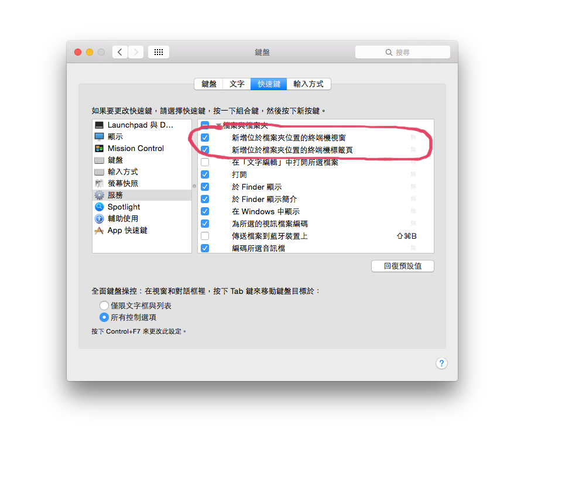
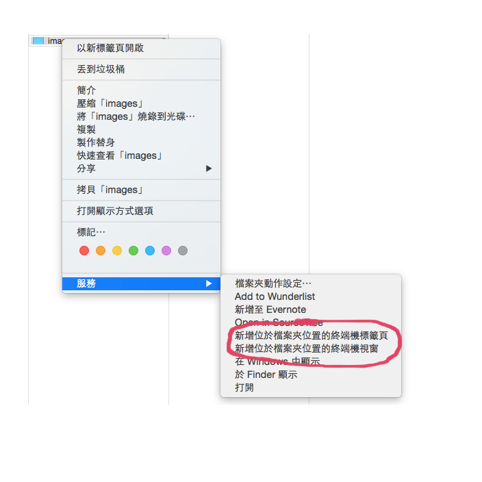
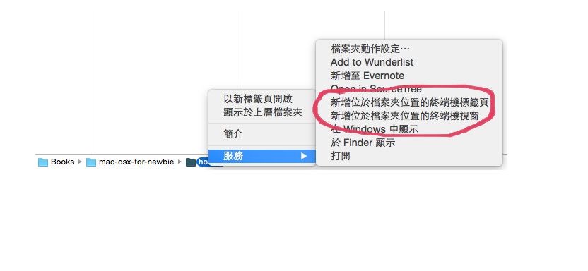

終端機
在 Finder 中快速資料夾的目錄到終端機（Terminal）中
在我們需要用終端機（Terminal）處理「某個路徑下」資料夾的東西時，我們常常需要在終端機內 cd、cd 的一直打，指到到了我們要去的目錄，這樣對我們來說是很沒有效率的。
我們可以透過設定「系統偏好設定」下的「鍵盤快捷鍵」的方式，讓我們在能夠在 Finder 直接開啟 Termianl 並到指定的資料夾下。
首先到「系統偏好設定」下的「鍵盤」：

切換到「快速鍵」這個頁籤並於左方選擇「服務」，然後將「服務」下的「新增位於檔案夾位置的端終機標籤頁」打勾即可～

之後在 Finder 視窗中的資料夾按滑鼠右鍵，並從選單中選擇「服務」項目下的「新增位於檔案夾位置的端終機標籤頁」，就能快速從這個路徑下開啟「終端機」了：

或下方「路徑列」中的任一節點也可以用終端機開啟：
